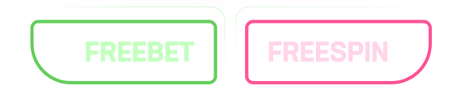

განათავსე ფსონი ეროვნულ ნაკრებზე
და მიიღე ლელოს ტოლი
საქართველო
18:00 24 ნოემბერი
საქართველო
"ლელო" ბეთი
ერთად გამარჯვებისკენ!
სარაგბო ნოემბერი ლიდერბეთზე!
უგულშემატკივრე საქართველოს რაგბის ეროვნულ ნაკრებს და მიიღე საჩუქარი ლიდერბეთზე!
1
დადე ფსონი საქართველოს რაგბის ეროვნული ნაკრების თამაშზე
2
დადე ფსონი საქართველოს რაგბის ეროვნული ნაკრების თამაშზე
3
დადე ფსონი საქართველოს რაგბის ეროვნული ნაკრების თამაშზე
აქცია ვრცელდება საქართველოს რაგბის ეროვნული
ნაკრების მიერ ნოემბერში გასამართ მატჩებზე.
10 ნოემბერი
იტალია-საქართველო
10 ნოემბერი
იტალია-საქართველო
10 ნოემბერი
იტალია-საქართველო
განათავსე ბილეთი სპორტში და მიიღე ლელოს თანაფარდი FREEBET და გაორმაგებული FREESPIN.
აქციაში მონაწილეობის მიღება შეუძლია ყველა ვერიფიცირებულ მომხმარებელს.
მიიღე საჩუქარი საქართველოს რაგბის ეროვნული ნაკრების მიერ დადებული ლელოს და გარდასახვის მიხედვით:
1 ლელო = 5 GEL FREEBET.
1 ლელო + გარდასახვა = 5 GEL FREEBET + 10 (ათი) FREESPIN.
0 ლელო = 10 (ათი) FREESPIN.
განათავსე ბილეთი სპორტში შემდეგი პირობებით:
მინ. ფსონი: 5 ლარი.
პოზიციების მინ. რაოდენობა: 3.
მინ. კოეფიციენტი: 1.20.
3 პოზიციიდან მინიმუმ 1 პოზიცია უნდა იყოს საქართველო - ტონგას მატჩიდან.
FREEBET / FREESPIN მაქსიმალური ოდენობა:
სპორტი - 25 GEL FREEBET.
“BOOONGO”-ს სლოტში - "Fruity Wild"- 50 FREESPIN.
FREESPIN-ისა და FREEBET-ის დარიცხვა ხდება თამაშის დასრულებიდან 24 საათის განმავლობაში.
1 მომხმარებელზე პრიზი გაიცემა ერთხელ.
FREEBET / FREESPIN-ის გამოყენება შესაძლებელია დარიცხვიდან ორი კვირის განმავლობაში.
FREEBET-ით მოგებული თანხა მომხმარებლის ანგარიშზე დაირიცხება, FREEBET-ის თანხის გამოკლებით.
FREEBET-ით განთავსებული ბილეთი აქციაში არ მონაწილეობს.
ბილეთები, რომლებზეც გამოყენებულია ფუნქცია-თანხის განაღდება ( Cash Out) აქციაში არ მონაწილეობს.
ბილეთში პოზიციის დამატების შემთხვევაში, აქციაში მონაწილეობს ის ბილეთები, რომელიც პოზიციის დამატებამდე ასრულებდა აქციის პირობებს.
აქციაში არ მონაწილეობს სისტემის ტიპის ბილეთი.
კომპანია ლიდერბეთი იტოვებს უფლებას ნებისმიერ დროს შეცვალოს ან გააუქმოს აქციის პირობები.
“ლიდერბეთი” იტოვებს უფლებას საკუთარი შეხედულებისამებრ უარი უთხარს მომხმარებელს აქციაში მონაწილეობაზე ,არ დაურიცხოს FREEBET-ი / FREESPIN-ი. გააუქმოს დარიცხული FREEBET-ი / FREESPIN-ი, ყოველგვარი ახსნა განმარტების გარეშე, მათ შორის ტექნიკური ხარვეზის შემთხვევაშიც.
ყოველგვარი ახსნა განმარტების გარეშე, მათ შორის ტექნიკური ხარვეზის შემთხვევაშიც. მომხმარებლის ან მომხმარებელთა ჯგუფის მიერ არაკეთილსინდისიერი ქმედების შემთხვევაში, რომელიც მიმართულია FREEBET-ის / FREESPIN-ის მისაღებად და ა.შ. “ლიდერბეთი” უფლებამოსილია საკუთარი შეხედულებისამებრ უარი უთხრას მას/მათ აქციაში მონაწილეობაზე. არ დაურიცხოს FREEBET-ი / FREESPIN-ი, გააუქმოს დარიცხული FREEBET-ი / FREESPIN-ი ყოველგვარი ახსნა-განმარტების გარეშე.